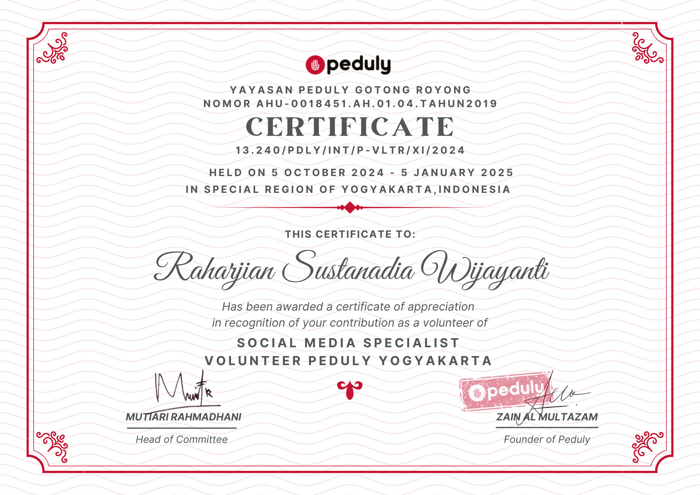

✦ About Me
A closer look at who I am.
An Informatics undergraduate at Universitas Teknologi Digital Indonesia (UTDI) who loves turning thoughtful designs into clean, responsive web experiences.
Hello, I’m Nadia
I enjoy turning designs into clean, responsive web experiences.
I am a informatics student at Universitas Teknologi Digital Indonesia (UTDI) with a strong interest in frontend web development and UI/UX implementation. I love paying attention to layout details, visual hierarchy, and smooth user interactions.
Alongside crafting client-side interfaces with HTML5, Tailwind CSS, JavaScript, and React, I also build full-stack web applications using Laravel, Node.js, relational and document databases (MySQL, MongoDB, Supabase), as well as cloud object storage.
Currently, I am looking for a Junior Frontend or Full-Stack Web Developer Internship where I can contribute to real-world products, learn from experienced developers, and keep growing as an engineer.
Engineering Workflow
How I approach web development.
A structured workflow focused on interface precision, maintainable codebases, and reliable full-stack integration.
Responsive UI Engineering
Every interface starts with clear visual hierarchy and fluid breakpoints so users get a consistent experience whether browsing on a smartphone or a wide desktop monitor.
- ✓ Fluid grid and flexbox layouts tested across standard mobile, tablet, and desktop breakpoints.
- ✓ Consistent light and dark theme parity with readable typography and color contrast.
- ✓ Interactive feedback states for buttons, forms, navigation menus, and loading indicators.
Technical Stack
Core Technologies & Tools.
Hover over the stream to pause, or select a category to inspect individual tools.
Academic & Credentials
My Education & Certifications.
Formal Education Journey
From Senior High School (SMA) in Natural Sciences to an ongoing Bachelor’s Degree (S1) in Informatics.
SMAN 2 Banguntapan
Natural Sciences Major (Jurusan IPA) • Yogyakarta
Focused on Mathematics, Physics, Chemistry, and Biology—building analytical problem-solving foundations and participating in creative school competitions.
Universitas Teknologi Digital Indonesia
Bachelor of Informatics (S1 Informatika) • 2024 – Present
Studying core software engineering, Web Frameworks, Cloud Computing, Data Engineering, Artificial Neural Networks, and developing a full-stack web capstone project.
Additional Courses & Certifications
Beyond formal university coursework, I actively complete intensive bootcamps, micro-skills, and industry certifications in full-stack web development, cloud computing, AI, cybersecurity, and digital literacy.
Web Programming Training (136 Learning Hours)
Full-stack web development program covering HTML, CSS, JavaScript, React.js, PHP, MySQL, Express.js REST APIs, and authentication.
Microsoft Azure AI Fundamentals
Core concepts of artificial intelligence workloads, machine learning, and cloud AI services on Microsoft Azure.
Belajar Dasar AI (10 Learning Hours)
Foundations of Artificial Intelligence, data utilization for AI, machine learning, and deep learning concepts.
Computer Hardware Basics
Foundational computer architecture, hardware components, and system troubleshooting principles.
AI Engineer for Milenial
Prompt engineering fundamentals and AI-assisted workflow optimization.
Ethical Hacker for Dummies
Cybersecurity fundamentals, ethical hacking concepts, and secure web development practices.
Introduction to Cloud Computing
Cloud service models (IaaS, PaaS, SaaS) and cloud deployment architecture fundamentals.
Konsep Pemrograman (Programming Concepts)
Algorithmic logic, control structures, and foundational software programming principles.
Pengantar Literasi Digital untuk Video Content Creator
Digital skills, safety, ethics, and cultural awareness in digital video content production.
Dampak Teknologi Digital bagi UMKM
Digital transformation and technology adoption strategies for small and medium enterprises.
Pengantar Mindset Digital: Mengubah Masa Depan dengan Pola Pikir Digital
Core elements of digital mindset and adaptability in rapidly evolving technology environments.
Mindset Digital: Pola Pikir Bertumbuh (Growth Mindset)
Continuous learning habits, constructive feedback adoption, and resilience in problem-solving.
Internet of Things (IoT) Introduction
Connected device ecosystems, sensor communication, and smart system fundamentals.
Social Impact & Volunteering
Beyond academics, creating meaningful social impact.
Alongside focusing on my Informatics studies and web development projects, I actively dedicate time to community volunteering—contributing to children’s education, creative workshops, inclusive learning, and environmental initiatives across Yogyakarta.
Satur-Date: Making Clay Keychain with Orphanage Children
✦ What I Did & Activity Highlights
Role: Event VolunteerJoined Peduly Yogyakarta’s weekend social program dedicated to bringing creative play and emotional companionship to orphanage children.
Internship & Work Experience
Practical experience in digital storytelling & teamwork.
Before applying for software engineering internships, I completed a 3-month Social Media Specialist term at Peduly Yogyakarta—building discipline, cross-functional collaboration, and audience-focused communication skills.
Social Media Specialist
Internship • Special Region of Yogyakarta
- ✓ Produced visual and short-form video content to highlight Peduly Yogyakarta’s community volunteering programs.
- ✓ Collaborated with event committees on-site to document activities and maintain consistent social media aesthetics.
- ✓ Maintained structured posting schedules, clear copywriting, and responsive audience engagement.
“Recognized for strong work performance, discipline, positive attitude, and dedication during 3 months as Social Media Specialist at Peduly.”

Official certificate awarded by Yayasan Peduly Gotong Royong (Yogyakarta) recognizing 3 months of contribution as a Social Media Specialist.
Interactive Mini-Game
Cozy Cat Runner Break.
Press Space / ↑ or Tap / Click directly on the garden track to start running and jump!
Mochi ran 0000 m — Tap anywhere to run again!
Let’s Connect
Looking for a frontend developer intern?
Feel free to reach out for internship opportunities, web collaborations, or just to say hello.